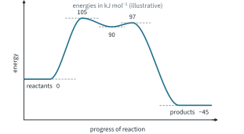

Further Organic Mechanisms 1 Tutorial
Chapter H3.6 · Further Organic Mechanisms Tutorial 1
On this page
Rate data, energies and product ratios are illustrative data unless a question says otherwise; bond energies are from the Data Booklet. Marks are shown in square brackets.
Question 1
In the radical substitution of an alkane, the step that decides which H atom is replaced is X• + R–H → H–X + R•.
- Using the Data Booklet bond energies C–H 410, H–Cl 431 and H–Br 366 kJ mol−1, calculate ΔH of this step for X = Cl and for X = Br. [2]
- Use the Hammond postulate to describe the transition state of each step. [2]
- Propane with Cl2 in light at 25 °C gives 45 % 1-chloropropane and 55 % 2-chloropropane; with Br2 at 125 °C it gives 3 % 1-bromopropane and 97 % 2-bromopropane. A secondary radical is more stable than a primary radical. Calculate how many times more reactive one secondary H atom is than one primary H atom in each case, and explain why bromination is far more selective. [3]
Question 2
Fig 1 is the energy profile for the hydrolysis of 2-chloro-2-methylbutane, CH3CH2C(CH3)2Cl, by an SN1 mechanism.

- Identify the rate-determining step and write the rate equation. [2]
- Use the Hammond postulate to say which species the first transition state resembles, and draw it. [2]
- Explain, using the steady-state approximation, why the concentration of the intermediate stays very small, and why [OH−] does not appear in the rate equation. [2]
Question 3
1-Bromobutane reacts with cyanide ions in a water–ethanol mixture at a fixed temperature. Initial rates were measured.
| Experiment | [CH3CH2CH2CH2Br] / mol dm−3 | [CN−] / mol dm−3 | initial rate / mol dm−3 s−1 |
|---|---|---|---|
| 1 | 0.020 | 0.040 | 4.0 × 10−7 |
| 2 | 0.040 | 0.040 | 8.0 × 10−7 |
| 3 | 0.040 | 0.080 | 1.6 × 10−6 |
| 4 | 0.030 | 0.060 | ? |
- Deduce the order of reaction with respect to each reactant. [2]
- Write the rate equation and calculate the rate constant, with its units. [2]
- Calculate the initial rate in experiment 4. [1]
- The experiment is repeated with 1-iodobutane in place of 1-bromobutane, at the same concentrations and temperature. Predict, with reasons, how the rate constant changes and whether the rate equation changes. [3]
- Name the organic product. [1]
Question 4
2-Chloro-2-methylbutane (the compound of Question 2) was hydrolysed in a water–propanone mixture containing OH− at 0.10 mol dm−3 (in excess) at 25 °C.
| t / s | 0 | 30 000 | 60 000 | 90 000 | 120 000 |
|---|---|---|---|---|---|
| [RCl] / mol dm−3 | 0.0200 | 0.0141 | 0.0100 | 0.00707 | 0.00500 |
A second run with [OH−] = 0.20 mol dm−3 gave exactly the same figures.
- Show that the reaction is first order with respect to the chloride. [2]
- Calculate the rate constant. [1]
- What does the second run show? Write the rate equation. [2]
- Explain why this chloride reacts by SN1, not SN2. [2]
Question 5
- The relative rates of SN2 reaction of 1-bromopropane with three nucleophiles under the same conditions are: H2O 1; CH3COO− 500; OH− 1.6 × 104. Explain this order. (pKa of CH3COOH 4.74; pKa of H2O 15.7: literature values, Topic 10.) [3]
- The relative rates of reaction with CH3O− are: 1-chloropropane 1; 1-bromopropane 50; 1-iodopropane 150. Explain this order, using bond energies from the Data Booklet. [2]
- Suggest why neither 1-fluoropropane nor propan-1-ol reacts with CH3O− under these conditions. [2]
Question 6
- The relative rates of SN2 reaction with NaI in propanone are: 1-bromopentane 1.0; 1-bromo-3-methylbutane 0.9; 1-bromo-2-methylbutane 0.03; 2-bromopentane 0.02. Explain the effect of each change of structure, compared with 1-bromopentane. [4]
- For SN1 hydrolysis, put 1-bromopentane, 2-bromopentane and 2-bromo-2-methylpentane in order of increasing rate. For each, draw the carbocation formed and state how many C–H bonds can take part in hyperconjugation. [4]
Question 7
This question is based on a classic experiment of 1935. (S)-2-Iodooctane, CH3CHI(CH2)5CH3, is dissolved in propanone with Na128I (iodide containing radioactive iodine-128). Two rates are followed: the rate at which 128I enters the organic compound, and the rate at which the optical rotation of the solution falls. Both are first order with respect to 2-iodooctane and first order with respect to iodide, with rate constants k(exchange) = 1.5 × 10−5 and k(loss of rotation) = 3.0 × 10−5 mol−1 dm3 s−1.
- Name the mechanism of the exchange, and explain how the rate equation supports it. [2]
- Draw the transition state of the exchange. [2]
- Explain why the rotation falls twice as fast as 128I is taken up. [3]
- State the configuration of the 2-iodooctane formed in one exchange. [1]
Question 8
(R)-3-Chloro-3-methylheptane, CH3CH2CCl(CH3)CH2CH2CH2CH3, is hydrolysed (H2O, warm, in a water–propanone mixture). The 3-methylheptan-3-ol formed has an enantiomeric excess of 16 %, in favour of the enantiomer formed with inversion of configuration.
- Explain why the product is neither a single enantiomer nor a racemic mixture. [3]
- Give the configuration of the enantiomer in excess, and calculate the percentage of each enantiomer in the product. [2]
- Predict, with a reason, how the enantiomeric excess would change if the carbocation were more stable and so lived longer before it was attacked. [2]
Question 9
(S)-(1-Bromopropyl)benzene, C6H5CH(Br)CH2CH3, reacts with OH− (in excess) in a water–propanone mixture at 25 °C. The rate of formation of 1-phenylpropan-1-ol is kobs[RBr].
| [OH−] / mol dm−3 | 0 | 0.050 | 0.100 | 0.200 |
|---|---|---|---|---|
| kobs / 10−5 s−1 | 2.0 | 4.0 | 6.0 | 10.0 |
- Show that kobs = k1 + k2[OH−], and find k1 and k2, with units. [3]
- What percentage of the product forms by SN2 at [OH−] = 0.100 mol dm−3? [2]
- Assuming that SN1 gives a racemic mixture, predict the percentages of the two enantiomers of 1-phenylpropan-1-ol at this [OH−], and give their configurations. [3]
- Further example. Suggest why this secondary bromide reacts by SN1 at a measurable rate, when 2-bromobutane hardly does. [1]
Question 10
A chemist needs (S)-2-methylpentanenitrile, CH3CH2CH2CH(CH3)CN, and starts from (R)-pentan-2-ol (ee 99 %).
- Route 1: conc. HBr, heat → 2-bromopentane; then KCN in ethanol, heat. The nitrile is mainly the (R) enantiomer, with an ee of only 38 %.
- Route 2: CH3SO2Cl, (C2H5)3N, 0 °C → the methanesulfonate (mesylate) ester; then NaCN, 40 °C. The nitrile has an ee of 98 %.
- Why can the alcohol not be converted directly into the nitrile with CN−? [1]
- Explain why the mesylate has the same configuration as the alcohol. [1]
- Give the mechanism of the second step of route 2, and explain why the nitrile is (S). [2]
- Suggest why route 1 gives mainly the (R)-nitrile, and why its ee is much lower. [3]
- Suggest why the final product is tested for traces of the mesylate. [1]